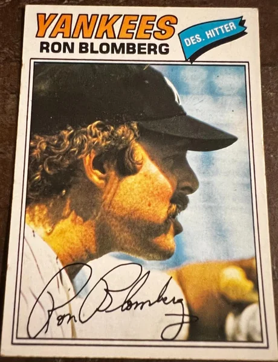
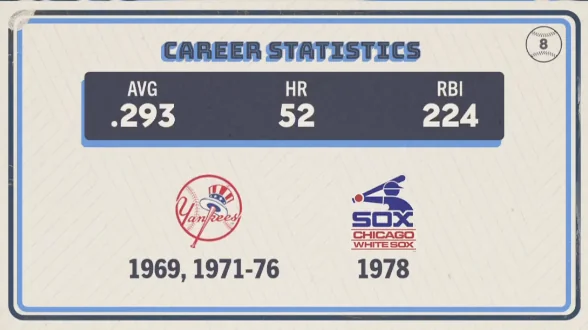

Ron Blomberg "Boomer"
Career Highlights & Facts
(Facts are AI-generated and may require verification)
- Became a permanent fixture in baseball history by stepping into the batter's box as the first player to ever occupy a newly created lineup spot.
- His bat and jersey from that historic debut were immediately sent to the National Baseball Hall of Fame in Cooperstown.
- Despite being a top-tier prospect who idolized a legendary center fielder, his career was frequently derailed by bizarre injuries, including a collision with a concrete outfield wall.
Would you like to find out more about Ron Blomberg?
Career Totals
| WAR | AB | H | HR | BA | R | RBI | SB | OBP | SLG | OPS | OPS+ |
|---|---|---|---|---|---|---|---|---|---|---|---|
| 9.4 | 1333 | 391 | 52 | .293 | 184 | 224 | 6 | .360 | .473 | .832 | 140 |
Statistics via Baseball-Reference.com
The Original Clue
